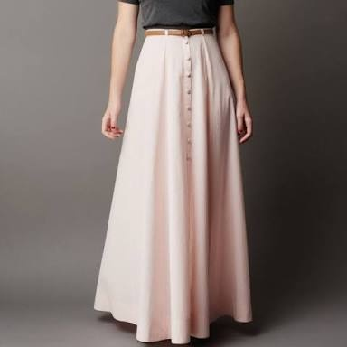

Jupes.
La jupe (de l'arabe joubba pour long vêtement de laine) est un vêtement fixé au niveau des hanches ou de la taille pour couvrir tout ou une partie du bas du corps sans division pour chaque jambe et sans qu'en principe les bords inférieurs soient refermés. Selon les cultures, la jupe est portée préférentiellement par les hommes (kilt, sapeta, sarong, etc.) ou par les femmes (sari, etc). Depuis 1672, le terme désigne en Europe un vêtement presque exclusivement féminin.
Dans l'Antiquité, les Romains et les Grecs portaient des habits semblables à des jupes, tels la tunique et la toge pour les hommes1, ou le péplos et le chiton pour les femmes2. Au contact des peuples germaniques et celtes qui avaient adopté ce type de vêtement, le pantalon commença à se populariser chez les soldats romains, puis dans le reste de la population masculine vers le iiie siècle. Le pantalon resta néanmoins longtemps considéré comme un vêtement « barbare », comme en témoignent les décrets impériaux de 397 et 399 qui en interdisaient le port dans Rome3,4. La tunique continua à être portée au cours du Haut Moyen Âge. L'habit religieux, quant à lui, évolua peu pendant cette période et les suivantes, et le clergé continua à porter des robes. Vers l'an mil, à la fin du Haut Moyen Âge, les nobles abandonnèrent la tunique courte pour des vêtements plus longs. Les vêtements masculins et féminins étaient alors très similaires entre eux. Néanmoins, contrairement aux hommes, les jupes des femmes n'étaient pas censées découvrir les pieds de celles-ci. En témoigne la réaction du majordome de la reine Jeanne de Navarre à la fin du xiiie siècle, à qui l'on présentait une paire de bas de soie en guise de cadeau de mariage pour celle-ci : il jeta les bas à terre et s'écria : « Ignorez-vous donc que les Reines d’Espagne n’ont point de jambes5 ? ». Vers le xive siècle, la tunique pour homme commença à nouveau à se raccourcir, tandis que les femmes conservaient de longues robes. À partir du xvie siècle, les tuniques courtes et les collants des hommes se muèrent progressivement en culottes, hauts-de-chausse et pantalons, définissant par opposition la jupe comme un vêtement typiquement féminin. Au cours du xixe siècle, la coupe des vêtements féminins se modifia plus rapidement qu'aux siècles passés. La jupe, au départ assez étroite, prit de l'ampleur et atteignit une taille spectaculaire dans les années 1860 avec la jupe à crinoline. Au cours des années 1910, la jupe féminine commença pour la première fois depuis des siècles à se raccourcir et sa taille varia grandement au cours des décennies suivantes. Dans les années 1960, la minijupe fit son apparition. Le xxe siècle a aussi été le témoin d'un recul de la jupe par rapport au pantalon, désormais porté quotidiennement par les femmes, et aussi par le clergé catholique, le pape Jean XXIII ayant supprimé en 1962 l'obligation du port de la soutane6.